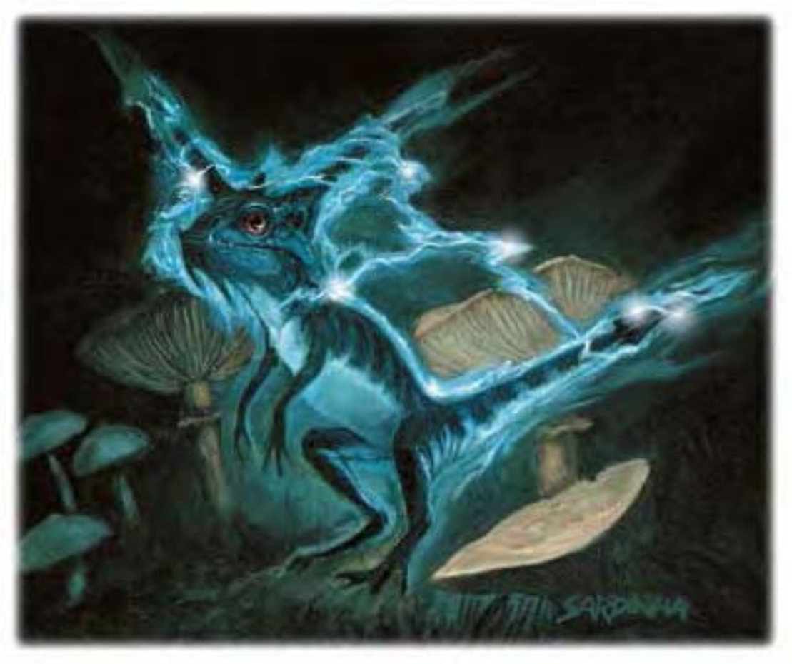

这只小蜥蜴约与埂犬同大。子弹形的头上长了一对大角，斜后生长有如尖耳。尾尖也有类似构造。
电蜥蜴是漂亮的类爬虫类生物，身体可以发出强烈电击。电蜥蜴下身为苍灰或苍蓝色，背部颜色则渐深。蓝黑色的背部与尾巴是他的标记。
电蜥蜴喜爱温暖潮湿的环境，通常匿伏于沼泽、河堤之阴或注满了水的洞穴中。他们捕鱼、爬虫类及小动物为食，都偶尔也会吃腐食或较大型的猎物。他们大多数时间都用于隐匿等待猎物经过。
电蜥蜴肩高约1英尺，重约25磅。
| 资料栏位 | 电蜥蜴 (Shocker Lizard) 小型魔法兽 |
| 生命骰 | 2d10+2 (13HP) |
| 先攻 | +6 |
| 速度 | 40英尺 (8格)、攀爬20英尺、游泳20英尺 |
| 防御等级 | 16 (+1体型、+2敏捷、+3天生)、接触13、措手不及14 |
| 基本攻击/擒抱 | +2 / -2 |
| 攻击 | 啮咬+3近战 (1d4) |
| 全力攻击 | 啮咬+3近战 (1d4) |
| 占据/触及 | 5英尺 / 5英尺 |
| 特殊攻击 | 震慑电击、致死电击 |
| 特殊能力 | 黑暗视觉60英尺、电气感知、对电击免疫、昏暗视觉 |
| 豁免 | 强韧+4、反射+5、意志+1 |
| 属性 | 力量10、敏捷15、体质13、智力2、感知12、魅力6 |
| 技能 | 攀爬+11、躲藏+11、跳跃+7、聆听+4、侦察+4、游泳+10 |
| 专长 | 精通先攻 |
| 环境 | 热暖带沼泽 |
| 组织 | 单独、成双、数尾 (3-5) 或群落 (6-11) |
| 宝藏 | 十分之一钱币、50%宝物、50%物品 |
| 阵营 | 总是绝对中立 |
| 进化 | 3-4HD (小型)；5-6HD (中型) |
| 等级修正值 | ― |
除非极饿，否则电蜥蜴并不喜欢跟比他大的生物战斗，他们通常会先发出连续的喀嗒声来警告对手不可接近。这种声响是低电量充能的结果，10英尺内的生物都会感到肌肤与头皮发麻。如果警告无效，电蜥蜴就会高举头角与尾巴，准备发出震慑电击。
电蜥蜴的战斗主要依靠电击。在对手因电击而昏迷或电击无效时，才会用啮咬攻击。落单的电蜥蜴发出电击后会马上逃跑，但若有其他电蜥蜴在左近，则在伙伴发电后会聚拢过来，一起电击对手。
震慑电击 (超自然)：电蜥蜴每轮可电击5英尺内的单一生物一次，对活物造成2d8点非致死伤害 (通过反射检定则伤害减半，DC=12)。豁免检定DC的调整值与体质调整值相同。
致死电击 (超自然)：若20英尺内有两只以上的电蜥蜴，则可合作发出致死电击。效果为半径20英尺，以任一电蜥蜴为中心，每只电蜥蜴可造成2d8点电击伤害，最大12d8点。反射检定DC=10+电蜥蜴数目，通过则伤害减半。
电气感知 (特异)：电蜥蜴可自动侦测到100英尺内的任何发电行为。
技能：电蜥蜴的颜色使他们在进行“躲藏”检定时具有+4种族加值，进行“聆听”与“侦察”检定时具有+2种族加值。进行“攀爬”与“跳跃”检定时，电蜥蜴以敏捷调整值取代力量调整值。电蜥蜴在进行“攀爬”检定时具有+8种族加值。即使被冲撞或受威胁，他们在进行“攀爬”检定时都可以随时取10。电蜥蜴在进行任何特殊动作或闪身避祸时，“游泳”检定具有+8种族加值。即使分心或受困，他们在进行“游泳”检定时都可以随时取10。若以直线前进，则可在游泳时进行奔跑动作。